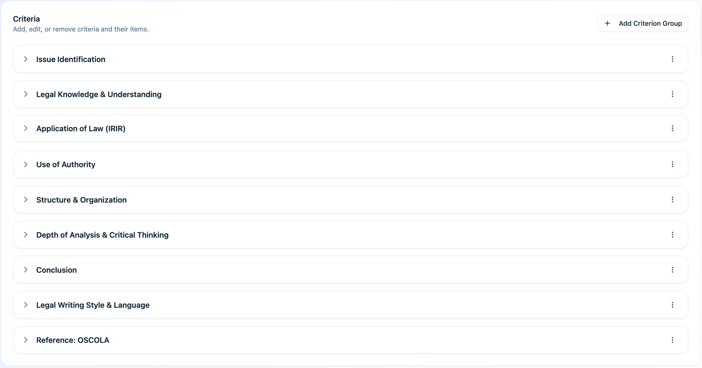

<!doctype html>
<html lang="en"><head><meta charset="utf-8"><title>Concepten</title>
<style>
  @font-face { font-family: "League Spartan"; font-weight: 700; src: url("../../Design/Merk/fonts/LeagueSpartan-Bold.ttf"); }
  @font-face { font-family: "Inter"; font-weight: 400; src: url("../../Design/Merk/fonts/Inter-Regular.ttf"); }
  :root { --navy:#002333; --gd:#007b54; --i7:#2c4a57; }
  * { margin:0; box-sizing:border-box; }
  html, body { width:2954px; height:2520px; }
  .wall { position:relative; width:2954px; height:2520px; overflow:hidden; color:var(--navy);
    background:
      radial-gradient(ellipse 80% 45% at 90% 52%, #f9f8f7 0%, rgba(249,248,247,0) 100%),
      linear-gradient(180deg,#dce7ee 0%,#e2edf1 20%,#ecf3f5 40%,#f4f6f6 55%,#eff3f3 70%,#e4edf1 90%,#dde8ee 100%); }
  .abs { position:absolute; }
  .logo { position:absolute; right:128px; bottom:128px; width:420px; }
  .num { font:700 240px/.78 "League Spartan"; letter-spacing:-.02em; color:var(--gd); white-space:nowrap; }
  .lbl { font:700 60px/1.05 "League Spartan"; letter-spacing:-.01em; color:var(--navy); white-space:nowrap; margin-top:40px; }
  .sh { filter: drop-shadow(0 14px 16px rgba(0,35,51,.16)) drop-shadow(0 44px 48px rgba(0,35,51,.22)); }
  .t { font-family:Inter; fill:#2c4a57; }
</style></head><body>
<div class="wall" id="wall"><div id="c"></div></div>
<script>
const N='#002333', I2='#cdd9de', GD='#007b54', G='#00e075', I7='#2c4a57', W='#fff';
const polar=(cx,cy,r,d)=>{const a=(d-90)*Math.PI/180;return [cx+r*Math.cos(a),cy+r*Math.sin(a)];};
const at=(x,y,html,extra='')=>`<div class="abs" style="left:${x}px;top:${y}px;${extra}">${html}</div>`;
const nl=(num,label,fs=240,lm=40)=>`<div class="num" style="font-size:${fs}px">${num}</div><div class="lbl" style="margin-top:${lm}px">${label}</div>`;

/* ---------- iconen (wit-gevuld, navy lijn) ---------- */
const sv=(inner,s=400,cls='')=>`<svg class="${cls}" width="${s}" height="${s}" viewBox="0 0 400 400">${inner}</svg>`;
const targetI=(s=400,cls='sh',st=N,fill=W)=>sv([172,116,60].map(r=>`<circle cx="200" cy="200" r="${r}" fill="${fill}" stroke="${st}" stroke-width="22"/>`).join('')+
 `<circle cx="200" cy="200" r="28" fill="${st}"/><line x1="206" y1="194" x2="338" y2="62" stroke="${st}" stroke-width="20" stroke-linecap="round"/>
  <line x1="338" y1="62" x2="378" y2="62" stroke="${st}" stroke-width="18" stroke-linecap="round"/><line x1="338" y1="62" x2="338" y2="22" stroke="${st}" stroke-width="18" stroke-linecap="round"/>`,s,cls);
function clk(cx,cy,r,sw,p,base=I2,fill=W,st=N){const [x1,y1]=polar(cx,cy,r,p*360),[x0,y0]=polar(cx,cy,r,0);
 return `<circle cx="${cx}" cy="${cy}" r="${r}" fill="${fill}" stroke="${base}" stroke-width="${sw}"/><path d="M${x0},${y0} A${r},${r} 0 0 1 ${x1},${y1}" fill="none" stroke="${st}" stroke-width="${sw}"/>
 <line x1="${cx}" y1="${cy}" x2="${cx}" y2="${cy-r*.62}" stroke="${st}" stroke-width="${sw*.55}" stroke-linecap="round"/><line x1="${cx}" y1="${cy}" x2="${cx+r*.34}" y2="${cy+r*.2}" stroke="${st}" stroke-width="${sw*.55}" stroke-linecap="round"/><circle cx="${cx}" cy="${cy}" r="${sw*.5}" fill="${st}"/>`;}
const arrowDown=(x,st=N,w=24)=>`<line x1="${x}" y1="22" x2="${x}" y2="150" stroke="${st}" stroke-width="${w}" stroke-linecap="round"/><polyline points="${x-34},114 ${x},154 ${x+34},114" fill="none" stroke="${st}" stroke-width="${w}" stroke-linecap="round" stroke-linejoin="round"/>`;
const papersI=(s=400,cls='sh')=>sv(`<rect x="40" y="46" width="190" height="250" rx="22" fill="#fff" stroke="${N}" stroke-width="16" transform="rotate(-7 135 171)"/>
 <rect x="90" y="76" width="190" height="250" rx="22" fill="#fff" stroke="${N}" stroke-width="16"/>
 ${[136,174].map(y=>`<line x1="126" y1="${y}" x2="244" y2="${y}" stroke="${I2}" stroke-width="12" stroke-linecap="round"/>`).join('')}<line x1="126" y1="212" x2="204" y2="212" stroke="${I2}" stroke-width="12" stroke-linecap="round"/>
 <circle cx="275" cy="300" r="92" fill="#fff"/>${clk(275,300,72,20,.485)}${arrowDown(350)}`,s,cls);
const clockDownI=(s=300,st=N,fill='none',base=I2)=>sv(`${clk(160,220,120,34,.485,base,fill,st)}${arrowDown(348,st,30)}`,s,'');

const C={};

/* 1. Zegels: gekartelde keurmerken, twee verschillende kleuren ring */
C[1]=()=>{
  function seal(R,ring,label,num,icon,rot){
    const pad=40,S=2*(R+pad),c=S/2,bumps=34,amp=13; let d='';
    for(let i=0;i<=720;i++){const th=i/720*2*Math.PI, r=R+amp*Math.cos(bumps*th); d+=(i?'L':'M')+(c+r*Math.sin(th))+','+(c-r*Math.cos(th));}
    const rt=R-92, id='arc'+Math.round(R*10+ring.length+num.length);
    return `<svg class="sh" width="${S}" height="${S}" viewBox="0 0 ${S} ${S}" style="transform:rotate(${rot}deg)">
      <defs><path id="${id}" d="M${c-rt},${c} A${rt},${rt} 0 0 1 ${c+rt},${c}"/></defs>
      <path d="${d}Z" fill="#fff" stroke="${ring}" stroke-width="12"/>
      <circle cx="${c}" cy="${c}" r="${R-52}" fill="none" stroke="${ring}" stroke-width="6"/>
      <text font-family="League Spartan" font-weight="700" font-size="56" letter-spacing="3" fill="${N}"><textPath href="#${id}" startOffset="50%" text-anchor="middle">${label}</textPath></text>
      <g transform="translate(${c-58},${c-190}) scale(.29)">${icon}</g>
      <text x="${c}" y="${c+105}" text-anchor="middle" font-family="League Spartan" font-weight="700" font-size="${num.length>3?150:176}" letter-spacing="-3" fill="${GD}">${num}</text>
    </svg>`;
  }
  const t=[172,116,60].map(r=>`<circle cx="200" cy="200" r="${r}" fill="none" stroke="${N}" stroke-width="26"/>`).join('')+`<circle cx="200" cy="200" r="28" fill="${N}"/><line x1="206" y1="194" x2="338" y2="62" stroke="${N}" stroke-width="24" stroke-linecap="round"/>`;
  const k=`${clk(160,220,120,34,.485,I2,'none')}${arrowDown(348,N,30)}`;
  return at(128,300,seal(340,N,'grading accuracy','96%',t,-7))+at(760,820,seal(340,GD,'less time spent grading','48.5%',k,6));
};

/* 2. Het bewijs tonen: liniaal voor accuraatheid, balken voor tijd */
C[2]=()=>{
  const x0=1000,wd=1826, X=p=>x0+wd*p/100;
  const A=`<svg class="abs" style="left:0;top:240px" width="2954" height="460" viewBox="0 0 2954 460">
    <line x1="${x0}" y1="270" x2="${x0+wd}" y2="270" stroke="${I2}" stroke-width="30" stroke-linecap="round"/>
    <text class="t" x="${x0}" y="350" font-size="44">0</text><text class="t" x="${x0+wd}" y="350" font-size="44" text-anchor="end">100</text>
    <line x1="${X(66)}" y1="270" x2="${X(70)}" y2="270" stroke="${G}" stroke-width="30"/>
    <circle cx="${X(66)}" cy="270" r="40" fill="${N}"/><circle cx="${X(70)}" cy="270" r="40" fill="#fff" stroke="${N}" stroke-width="16"/>
    <line x1="${X(66)}" y1="230" x2="${X(66)}" y2="150" stroke="${N}" stroke-width="6"/><line x1="${X(70)}" y1="230" x2="${X(70)}" y2="150" stroke="${N}" stroke-width="6"/>
    <text class="t" x="${X(66)-14}" y="140" font-size="52" text-anchor="end" fill="${N}" style="fill:${N}">Eduface's grade</text>
    <text class="t" x="${X(70)+14}" y="140" font-size="52" style="fill:${N}">teacher's grade</text></svg>`;
  const bw=wd, b2=wd*.515;
  const B=`<svg class="abs" style="left:0;top:860px" width="2954" height="420" viewBox="0 0 2954 420">
    <rect x="${x0}" y="40" width="${bw}" height="110" rx="26" fill="${N}"/>
    <text x="${x0+44}" y="112" font-family="Inter" font-size="50" fill="#fff">grading time without Eduface</text>
    <rect x="${x0}" y="220" width="${b2}" height="110" rx="26" fill="${N}"/>
    <rect x="${x0+b2}" y="220" width="${bw-b2}" height="110" rx="26" fill="none" stroke="${N}" stroke-width="8" stroke-dasharray="30 22"/>
    <text x="${x0+44}" y="292" font-family="Inter" font-size="50" fill="#fff">with Eduface</text>
    <g transform="translate(${x0+bw-190},${222}) scale(.27)">${clk(200,200,130,40,.485,I2,'#fff')}</g></svg>`;
  return at(128,250,nl('96%','grading accuracy'))+at(128,850,nl('48.5%','less time spent grading'))+A+B;
};

/* 3. Callouts op het echte product */
C[3]=()=>{
  const shot=``;
  const call=(x,y,icon,num,label,w)=>at(x,y,`<div style="display:flex;align-items:center;gap:36px;background:#fff;border-radius:44px;padding:34px 56px 34px 40px;box-shadow:0 10px 26px rgba(0,35,51,.14),0 50px 110px rgba(0,35,51,.28)">${icon}<div><div class="num" style="font-size:170px">${num}</div><div class="lbl" style="font-size:48px;margin-top:26px">${label}</div></div></div>`);
  const dot=(x,y)=>`<svg class="abs" style="left:${x-34}px;top:${y-34}px" width="68" height="68"><circle cx="34" cy="34" r="26" fill="${G}" stroke="${N}" stroke-width="8"/></svg>`;
  const line=(x1,y1,x2,y2)=>`<svg class="abs" style="left:0;top:0" width="2954" height="2520"><line x1="${x1}" y1="${y1}" x2="${x2}" y2="${y2}" stroke="${N}" stroke-width="8"/></svg>`;
  return shot+line(1120,600,1500,760)+dot(1500,760)+line(2300,1250,2560,1170)+dot(2560,1170)
   +call(520,330,targetI(190,''),'96%','grading accuracy')+call(1560,1230,clockDownI(190),'48.5%','less time spent grading');
};

/* 4. Proces-rail: elke stat hangt aan een stap */
C[4]=()=>{
  const xs=[330,1000,1670,2340], y=900;
  const ic=[
    sv(`<rect x="100" y="60" width="200" height="270" rx="24" fill="none" stroke="${N}" stroke-width="26"/>${[130,190,250].map(v=>`<line x1="150" y1="${v}" x2="250" y2="${v}" stroke="${N}" stroke-width="20" stroke-linecap="round"/>`).join('')}`,120),
    sv(`<circle cx="200" cy="200" r="150" fill="none" stroke="${N}" stroke-width="26"/><circle cx="200" cy="200" r="76" fill="none" stroke="${N}" stroke-width="26"/><circle cx="200" cy="200" r="24" fill="${N}"/>`,120),
    sv(`<polyline points="80,210 170,300 330,110" fill="none" stroke="${N}" stroke-width="40" stroke-linecap="round" stroke-linejoin="round"/>`,120),
    sv(`<rect x="60" y="80" width="180" height="240" rx="26" fill="none" stroke="${N}" stroke-width="26"/><line x1="150" y1="200" x2="350" y2="200" stroke="${N}" stroke-width="30" stroke-linecap="round"/><polyline points="290,140 350,200 290,260" fill="none" stroke="${N}" stroke-width="30" stroke-linecap="round" stroke-linejoin="round"/>`,120)];
  const labels=['Student submits','AI proposes a grade','Teacher approves','Grade lands in the LMS'];
  let h=`<svg class="abs" style="left:0;top:0" width="2954" height="2520"><line x1="${xs[0]}" y1="${y}" x2="${xs[3]}" y2="${y}" stroke="${I2}" stroke-width="18" stroke-linecap="round"/>
    <line x1="${xs[1]}" y1="${y}" x2="${xs[3]}" y2="${y}" stroke="${N}" stroke-width="18" stroke-linecap="round"/>
    <line x1="${xs[1]}" y1="${y-96}" x2="${xs[1]}" y2="640" stroke="${N}" stroke-width="8" stroke-dasharray="4 18" stroke-linecap="round"/>
    <path d="M${xs[1]},1150 V1190 H${xs[3]} V1150" fill="none" stroke="${N}" stroke-width="10" stroke-linecap="round" stroke-linejoin="round"/>
    <line x1="${(xs[1]+xs[3])/2}" y1="1190" x2="${(xs[1]+xs[3])/2}" y2="1240" stroke="${N}" stroke-width="10" stroke-linecap="round"/></svg>`;
  xs.forEach((x,i)=>{h+=at(x-96,y-96,`<div style="width:192px;height:192px;border-radius:50%;background:#fff;display:flex;align-items:center;justify-content:center;box-shadow:0 8px 20px rgba(0,35,51,.14),0 30px 70px rgba(0,35,51,.24)">${ic[i]}</div>`)
    +at(x-300,y+124,`<div style="width:600px;text-align:center;font:700 54px/1.05 'League Spartan'">${labels[i]}</div>`);});
  h+=at(xs[1]-380,300,`<div style="width:760px;text-align:center"><div class="num" style="font-size:230px">96%</div><div class="lbl" style="margin-top:34px">grading accuracy</div></div>`);
  h+=at((xs[1]+xs[3])/2-420,1280,`<div style="width:840px;text-align:center"><div class="num" style="font-size:230px">48.5%</div><div class="lbl" style="margin-top:34px">less time spent grading</div></div>`);
  return h;
};

/* 5. Zuil: smalle staande strip over de volle hoogte */
C[5]=()=>{
  const strip=at(0,0,`<div style="width:840px;height:2520px;background:#fff;box-shadow:0 0 40px rgba(0,35,51,.10),30px 0 140px rgba(0,35,51,.24);border-radius:0 80px 80px 0"></div>`);
  const b1=at(120,260,`${targetI(330)}<div style="margin-top:60px">${nl('96%','grading accuracy',210,36).replace('font-size:60px','')}</div>`);
  const div=at(120,1230,`<div style="width:460px;height:8px;border-radius:4px;background:#cdd9de"></div>`);
  const b2=at(120,1380,`${papersI(330)}<div style="margin-top:60px">${nl('48.5%','less time spent grading',210,36)}</div>`);
  return strip+b1+div+b2;
};

const n=new URLSearchParams(location.search).get('c')||'1';
document.getElementById('c').innerHTML=C[n]();
</script></body></html>
